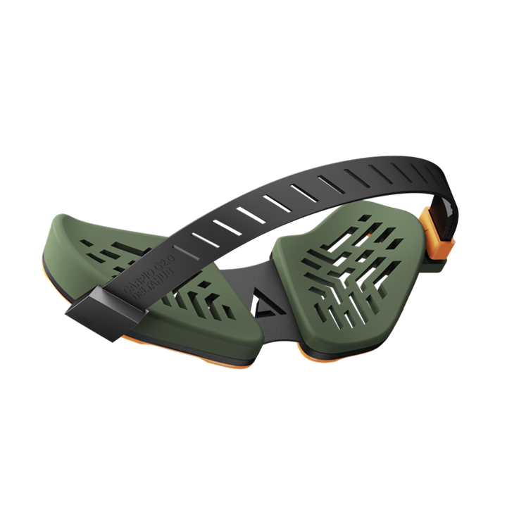

Recommended by 3 of 4 reviewers as the best ergonomic option - glides with your hand on Teflon runners instead of locking your wrist down.
| # | 产品 | 推荐度 | 适合 | 价格 |
|---|---|---|---|---|
| 1 | Deltahub Carpio 2.0 | 3/4 reviewers | Ergonomic glide that moves with your hand | $39-45 |
| 2 | HyperX Wrist Rest | 1/4 reviewers | All-day typing comfort | $20-30 |
The consensus ergonomic pick across Inven Global, The Shortcut and BadSeed Tech's Brian. It glides with your hand on Teflon runners instead of pinning your wrist in place - the wrist rest real reviewers actually wear.
适合：Ergonomic glide that moves with your hand · $39-45
DowneLink's hands-on pick for classic comfort. Cooling gel memory foam with a stable anti-slip base - the traditional wrist rest done right.
适合：All-day typing comfort · $20-30